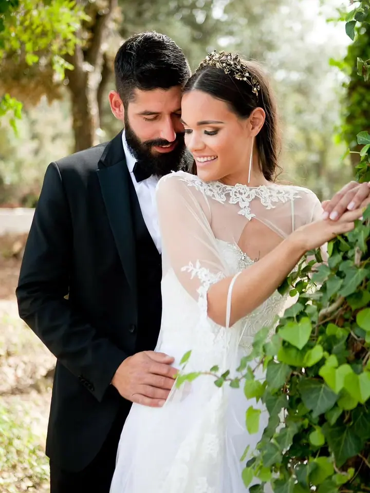
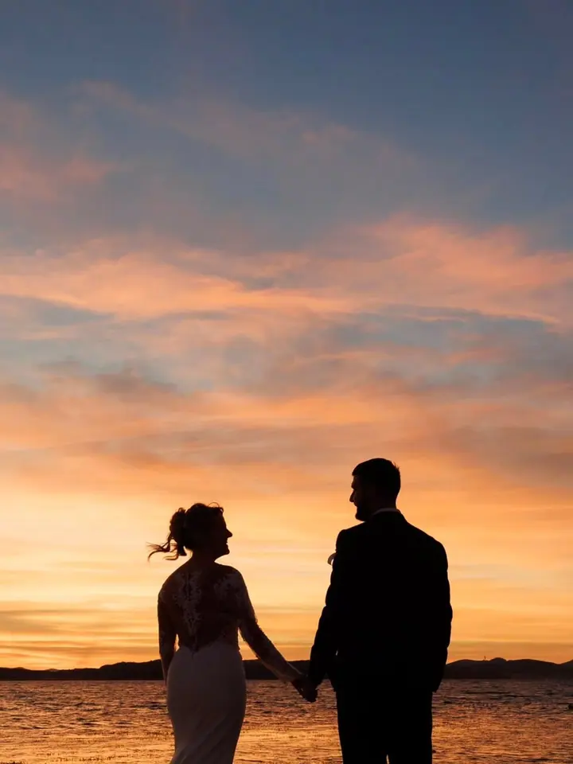
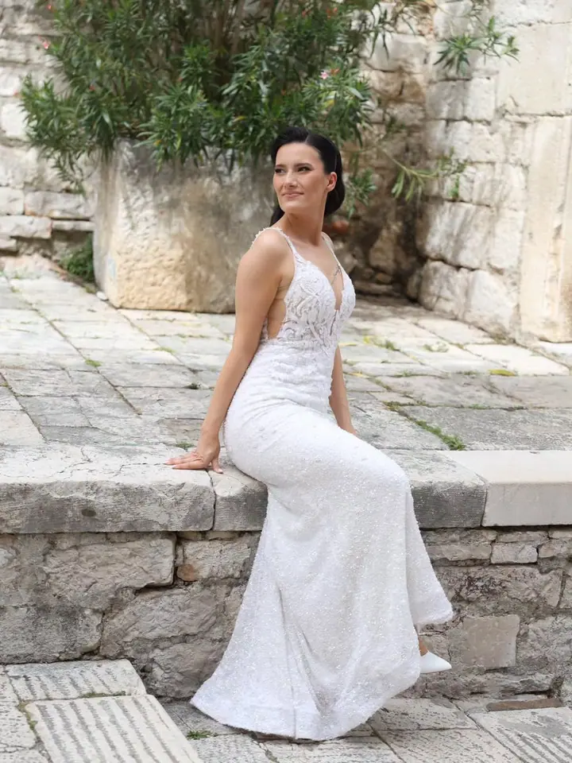
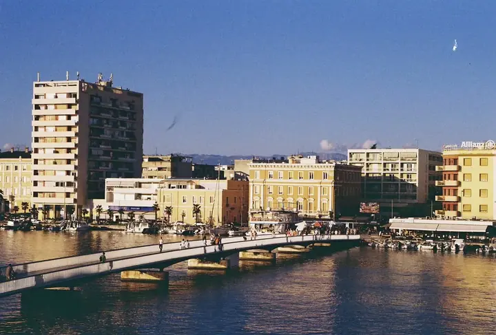
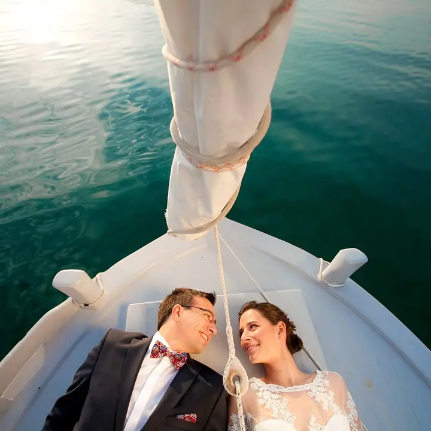

jedna
Svatební fotografie
Ke každé svatbě přistupujeme individuálně a s respektem k tomu, co fotíme. Chceme zachytit emoce a atmosféru tak, jak opravdu jsou: skutečné, spontánní a nadčasové.

Svatební fotograf a kameraman · Zadar, okolí Zadaru

Jmenuji se Lovre Jelenković a s týmem fotografů a kameramanů točíme a fotíme svatby v Zadaru a okolí. Navazuji na rodinné studio Foto Lovre, které od roku 1972 sídlí ve stejné ulici v centru Zadaru.
Více o mně
Co dělám
jedna
Ke každé svatbě přistupujeme individuálně a s respektem k tomu, co fotíme. Chceme zachytit emoce a atmosféru tak, jak opravdu jsou: skutečné, spontánní a nadčasové.
Jsme tým vizuálních umělců, který se věnuje svatební fotografii i kameře. Váš den tak může mít příběh v obrazech i ve filmu.
Profesionální portréty, rodinné fotografie, focení objektů a produktů. Najdete nás v ulici Špire Brusine 10.
Vyvoláváme filmy, děláme digitální tisky a restaurujeme staré fotografie. V prodejně máme instantní fotoaparáty, filmy, alba i rámečky.

Tři generace v jedné ulici a pořád stejná chuť fotit.

Za objektivem
Foto Lovre je rodinná živnost a fotografii se u nás věnují už tři generace. Od roku 1972 pracujeme ve stejné ulici, pořád se stejným nadšením a se snahou, aby každý záběr měl duši. V roce 2023 nám Sdružení živnostníků Zadar udělilo Zlatou cenu za 50 let nepřetržité práce.
Dnes vedu tým vizuálních umělců, který se specializuje na svatební fotografii a kameru. Vaše svatba si zaslouží autentické fotky, které vyprávějí příběh. Ke každé svatbě proto přistupujeme individuálně a s respektem k okamžikům, které fotíme.
Kromě svateb u nás v centru Zadaru najdete fotoateliér, fotolaboratoř, kopírku a prodejnu s filmy, alby a rámečky. Všechno na jednom místě, od portrétu přes vyvolání filmu až po vytištěnou fotku na zdi.
Lovre
Napište nám na info@foto-lovre.com nebo zavolejte na 023 317 100. Rádi si poslechneme vaše představy.
Probereme průběh dne, místa a to, jestli chcete fotky, video, nebo obojí. Každou svatbu chystáme individuálně.
Fotíme a natáčíme nenápadně, aby fotky zůstaly skutečné a spontánní. Na focení párů rádi vyrazíme k moři nebo do přírody kolem Zadaru.
Dostanete hotové fotky a film. Pokud chcete, vytiskneme je v naší laboratoři a připravíme alba nebo rámečky.
Portfolio
Otázky
Ano. Jsme tým, který se specializuje na svatební fotografii i kameru, takže můžete mít fotky i film od jednoho týmu.
Hlavně v Zadaru a okolí. Náš ateliér najdete v centru Zadaru v ulici Špire Brusine 10.
Ano. Máme vlastní fotolaboratoř s digitálními tisky a v prodejně nabízíme alba a rámečky. Umíme také restaurovat staré fotografie.
Pondělí až pátek 7:30–14:30 a 16:00–20:00, sobota 8:30–13:00, v neděli je zavřeno. Změny a svátky aktualizujeme na profilu v Google Mapách.
Napište pár vět o tom, co si představujete. info@foto-lovre.com